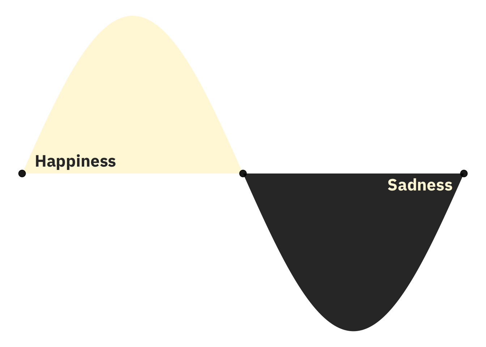
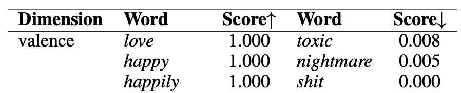
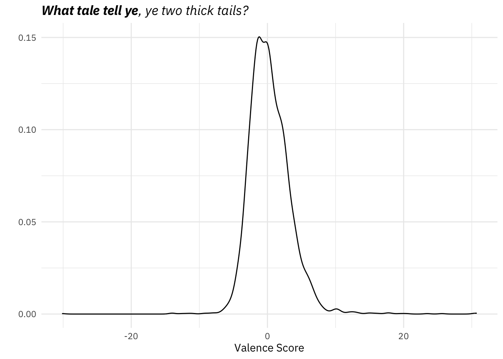
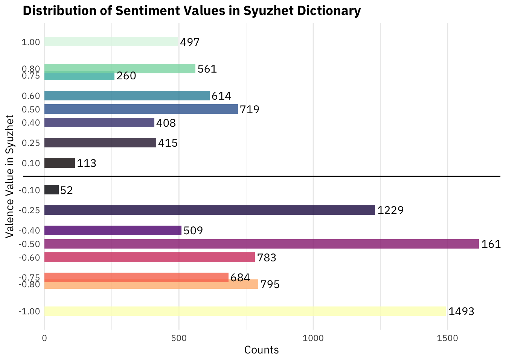
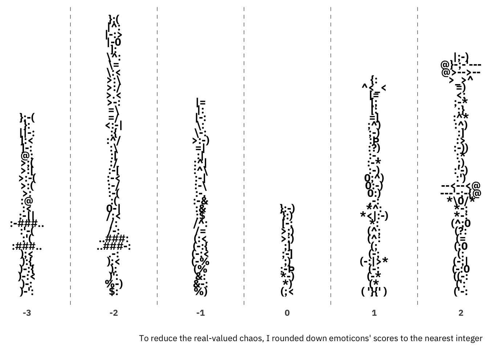
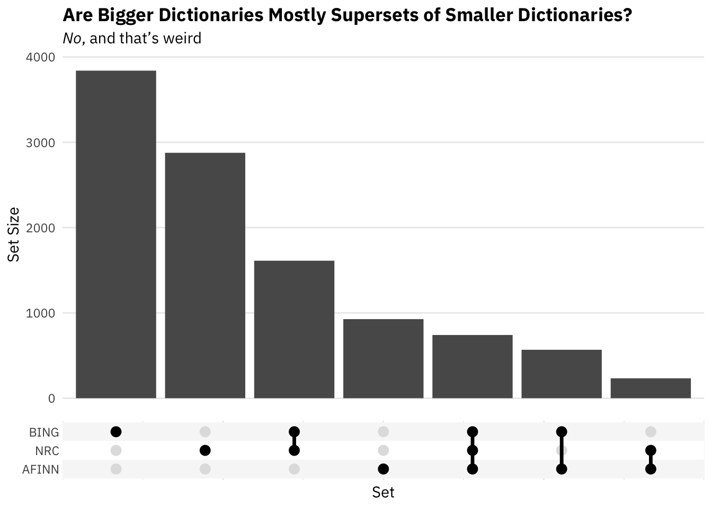

Introduction
Chances are, if you’re going to do a mid-2000s to mid-2010s style sentiment analysis, you’re going to use a sentiment dictionary[These are also referred to as sentiment lexicons].[Or, you might be a colleague of mine and publishing an article in PNAS in 2022. Congrats!] When reaching for one of these things, you’ve got quite a few options. This embarras de richesse should raise the question, Which should I use? I say “should raise the question” because I feel like all too often these dictionaries are presented as issue-free, ‘sure just go ahead and use it’ tools. For anyone who has studied measurement or thought about scale validation that is a truly apoplexy-inducing idea.
Both for your and my future reference, below I (will, upon completion) have a description of 10 or so dictionaries that I’ve come across quite a few times and found worth investigating why they were invented and if they should ever still be used.1 Regardless of what I say below, remember that you’ll probably have to think about your application when choosing a dictionary; there is no one-size-fits-all best choice. Also, this post abstains from high-level thoughts about the entire enterprise of using sentiment dictionaries to get sentiment scores for sentences, utterances, documents, etc. That’s a different kettle of fish.2
With that, let’s go through these things in alphabetical order.
AFINN
The subtitle of the original publication says it all, “Evaluation of a word list for sentiment analysis in microblogs.” In the paper’s abstract, the great Dane and presumably the namesake of the lexicon, Finn Arup Nielsen, lays out more explicitly why he created a new sentiment lexicon, “There exist several affective word lists, e.g., ANEW (Affective Norms for English Words) developed before the advent of microblogging and sentiment analysis. I wanted to examine how well ANEW and other word lists performs for the detection of sentiment strength in microblog posts in comparison with a new word list specifically constructed for microblogs.” There’s AFINN’s origin story.3
One of the unique features of the AFINN lexicon is that words are mapped to integers instead of merely {positive, negative}. Here you can see a few words at each value:
set.seed(1)
get_sentiments('afinn') %>%
group_by(value) %>%
add_count(name = 'count') %>%
slice_sample(n = 4) %>%
summarise(
`no. words` = mean(count),
words = glue_collapse(word, sep = ', ')) %>%
arrange(value) %>% filter(value != 0)# A tibble: 10 × 3
value `no. words` words
<dbl> <dbl> <glue>
1 -5 16 motherfucker, bitches, cocksuckers, bastard
2 -4 43 scumbag, fucking, fraudsters, fucked
3 -3 264 moron, destroy, despair, scandals
4 -2 966 animosity, censors, robs, touts
5 -1 309 imposing, unclear, demonstration, uncertain
6 1 208 share, extend, feeling, commit
7 2 448 tranquil, consent, supportive, sympathetic
8 3 172 audacious, classy, luck, gracious
9 4 45 exuberant, wonderful, rejoicing, wowww
10 5 5 hurrah, outstanding, superb, thrilled And yes, I did set the seed above to avoid randomly showing you certain words.
You might be wondering
- why -5 to 5 and
- how he assigned words to those numbers
Quoting him on the former, “As SentiStrength it uses a scoring range from −5 (very negative) to +5 (very positive).” Convention is powerful. As for the latter, the question of how numbers were assigned to words, “Most of the positive words were labeled with +2 and most of the negative words with –2 […]. I typically rated strong obscene words […] with either –4 or –5.” So he was basically winging it.
Another unique feature: the dictionary has 15 bigrams, 10 of which are below.4
set.seed(12)
get_sentiments('afinn') %>%
filter(str_detect(word, ' ')) %>%
slice_sample(n = 10)# A tibble: 10 × 2
word value
<chr> <dbl>
1 cashing in -2
2 no fun -3
3 green wash -3
4 not good -2
5 dont like -2
6 not working -3
7 some kind 0
8 green washing -3
9 cool stuff 3
10 messing up -2- Size: 2477 entries
- Coverage: In addition to the bog-standard sentiment words, it has words all the cool kids were saying in the late 2000, early 2010s.
- R Packages:
tidytext,lexicon,textdata - Publication: Here
- Bottom Line: It’s been superseded by VADER (below)
Bing (aka Hu and Liu)5
According to the man himself, “This list [i.e., the lexicon] was compiled over many years starting from our first paper (Hu and Liu, KDD-2004).” I’m not sure what the post-publication compilation process was, but the original process is well-described in the original publication. Essentially, they started with adjectives6 with obvious polarity (e.g., great, fantastic, nice, cool, bad, dull) as ‘seed words’ and collected synonyms (and antonyms) of those words, then synonyms and antonyms of those words, and so on, iteratively. To do this, they used WordNet, a chill-ass semantic network. One thing that’s nice about the resulting lexicon is that it’s topic general. That is, though they developed this lexicon for the specific purpose of determining people’s opinions about product features in product reviews, it has a generality beyond that.
Actually looking at the words, you’ll notice there’s some weirdness.
head(get_sentiments('bing'), 10)# A tibble: 10 × 2
word sentiment
<chr> <chr>
1 2-faces negative
2 abnormal negative
3 abolish negative
4 abominable negative
5 abominably negative
6 abominate negative
7 abomination negative
8 abort negative
9 aborted negative
10 aborts negative First, I’m not sure what “2-faces” is. If you say that it’s a solecistic rendering of “two-faced,” I’d say probably. In their appropriate alphabetic order, both “two-faced” and “two-faces” appear later in the dictionary. Anyway, you’ll notice as well that a lot of the words would reduce to a single lemma if we lemmatized the dictionary. You can think of that as a positive feature of the BING dictionary. It means you don’t have to have lemmatized (or stemmed) text. But its inclusion of derived words seems a bit haphazard. The abort-aborted pair is there, but abolish is hanging out along without its past tense.
- Size: In the
tidytextpackage the BING dictionary has 6786 terms (matching what his website says, “around 6800 words”) - R Packages:
tidytext,lexicon,textdata - Bottom Line: It’s a classic and got wide coverage, but not as good as VADER or NRC-EIL.
Loughran-McDonald Master Dictionary w/ Sentiment Word Lists
I’m honestly why this dictionary is included in packages – not because it’s bad7, but because it’s so (so so so) niche. If you’re doing text analysis on financial text (or aware of cool research doing this), please drop me a line and tell me about it.
If you want to learn about it, here’s the page.
- R Packages:
tidytext,lexicon,textdata
NRC (original)
Saif Mohammad and friends developed a few National Research Council (NRC) of Canada-sponsored sentiment dictionaries. The first of them assigns words not only polarity labels (positive, negative), but emotion labels as well:
tidytext::get_sentiments('nrc') %>%
count(sentiment, sort = TRUE)# A tibble: 10 × 2
sentiment n
<chr> <int>
1 negative 3318
2 positive 2308
3 fear 1474
4 anger 1246
5 trust 1230
6 sadness 1187
7 disgust 1056
8 anticipation 837
9 joy 687
10 surprise 532These eight emotions below negative and positive were theorized by Bob Plutchik to be fundamental, or something.8 I’m going to ignore those emotions in this subsection. I’m also not going to talk too much about this dictionary, because it’s superseded by the real-valued its successors, the NRC-EIL and NRC-VAD (below).
Before I leave this lexicon, though, one bizarre thing about it: 81 words are both positive and negative (???)
get_sentiments('nrc') %>%
filter(sentiment %in% c('negative', 'positive')) %>%
add_count(word) %>%
filter(n > 1) %>% select(-n)# A tibble: 162 × 2
word sentiment
<chr> <chr>
1 abundance negative
2 abundance positive
3 armed negative
4 armed positive
5 balm negative
6 balm positive
7 boast negative
8 boast positive
9 boisterous negative
10 boisterous positive
# ℹ 152 more rowsAs a matter of semantics, I get it for some of these (balm I do not get, though). Practically, if you’re doing an analysis with this dictionary, you’re probably going to want to remove all these terms before calculating sentiment scores.
- R Packages:
tidytext,lexicon,textdata - Size: 5464 words (positive and negative, not words with ambiguous polarity)
- Bottom Line: Superseded by Saif Mohammed’s subsequent efforts.
NRC-EIL
This thing’s value-added, as my economist friend likes to say, is that instead of a simple ‘positive’ or ‘negative’ value for each sentiment entry, there’s a number between -1 and 1. “Real-valued,” as measurement-heads say. This is actually extremely important if you’re aggregating word-level sentiment into something bigger (which … honestly, email me if you’re doing anything other than that.) How they got these real-valued polarity scores is actually a pretty interesting methods story if you’re into that kind of thing, but I won’t go into ‘MaxDiff scaling’ here. One very important thing to note about this dataset, though, is that valence is that polarity isn’t in this dataset. This vexed me for a minute before I realized that it’s in the real-valued NRC-VAD (below). So, on the off chance you’re looking for the best measurement of Plutchik’s eight basic emotions (and that’s a very off chance), this is the best place to look.
- R Packages:
textdata - Examples: You can see an example of an analysis of Ezra Klein’s podcasts here.
- Bottom Line: I’m not sure why it exists, but it’s the only lexicon doing what it’s doing.
NRC-VAD
Once you have a hammer, everything starts looking like a nail. That’s how I explain the existence of this dictionary to myself. Saif Mohammed & Co. found these cool scaling technique and were like, “On what dimensions can we scale more words?” They seem to have stumbled on this idea the three most fundamental dimensions in concept space are valence, arousal, and dominance. Maybe it’s an indictment of my memory, perhaps an indictment of the psychology department at the University of Arkansas, but I managed to graduate summa cum laude with a degree in psychology without ever hearing of this. Regardless of supposed fundamental dimensions in concept space, valence is fundamental and is just another word for polarity which is the main thing people are doing with sentiment dictionaries.
This also led to my favorite table in I’ve ever seen in an academic article

Whenever I need to express that something is pure bad valence, I now reach for the phrase ‘toxic nightmare shit.’
- R Packages:
textdata - Bottom Line: Hell yeah. This is a good one.
SOCAL
It’s the Semantic Orientation CALculator! Like VADER (below), SOCAL is both a sentiment dictionary and rules for modifying words’ sentiment given the context in which they appear. Below, I’ll only briefly consider the dictionary part. I recommend reading the publication both for more details on SOCAL itself as well as sentiment analysis generally. In a sea of sentiment articles that are slapdash publications from some “Proceedings of blah blah blah” or “Miniconference on yak yak yak” this one really stands out for its professionalism and thoroughness.9 As for whether or not you should actually use this dictionary, uh, you should keep reading.
One fun thing to note about SOCAL’s dictionary: it has more entries with spaces than any other dictionary I’ve seen.
hash_sentiment_socal_google %>%
group_by(n_gram = str_count(x, ' ') + 1) %>%
count(n_gram) %>%
ungroup()# A tibble: 8 × 2
n_gram n
<dbl> <int>
1 1 2071
2 2 1097
3 3 97
4 4 17
5 5 3
6 6 3
7 7 1
8 8 1This dictionary has not only a huge bigrams:unigrams ratio, but it has sextagrams, a septagram, and even an octogram! This never happens! Let’s look at the n-grams where n > 4
hash_sentiment_socal_google %>%
filter(str_count(x, ' ') > 3)Key: <x>
x y
<char> <num>
1: darker and funnier than expected -4.092375
2: every other word is f -1.955614
3: in your face everywhere you turn -5.357512
4: lowbump bump bump bump bump bump bumpbumpbumpbump lowbump 5.622471
5: throw your peanut shells on the floor -5.186874
6: trying to get on top -2.573428
7: type stype suh huh uh huh's -4.281949
8: write an awesome story to sell -6.262021I, uh, don’t really know what to make of these. There’s actually a restaurant named “Lambert’s Cafe” in Ozark, Missouri where you get peanuts in tin buckets and “throw your peanut shells on the floor” and, unless I’m remembering it wrong, it’s something people like about the place.
Speaking of things that are starting to be concerning, the distribution of scores:
library(ggtext)
ggplot(hash_sentiment_socal_google, aes(y)) +
geom_density() +
labs(
y = '',
x = 'Valence Score',
title = '**What tale tell ye**, ye two thick tails?'
) +
theme(plot.title = element_markdown(face = 'italic'))
No, that density plot isn’t glitching. There really are words out there in the extremes:
hash_sentiment_socal_google %>%
filter(abs(y) > 15)Key: <x>
x y
<char> <num>
1: almost mafiosio styled 15.61625
2: automatically bestselling 17.60440
3: coming of age isms 17.62518
4: cushion handled 23.45929
5: hop ified -30.16008
6: keyboard crafted 30.73891
7: more than palateable 25.61696
8: oven to stovetop 19.49040
9: piano blessed 30.40257
10: rustic yet contemporary 16.31055
11: slotted spooned 18.19201
12: thick spoked 20.43281At this point, you might be wondering … what scale is this? And what are values for our vanilla valence-indicators “good” and “bad”?
hash_sentiment_socal_google %>%
filter(x %in% c('good', 'bad'))Key: <x>
x y
<char> <num>
1: bad -1.636520
2: good 1.872093Ok, that’s fine. Maybe. But here’s something that probably isn’t fine:
hash_sentiment_socal_google %>%
filter(str_detect(x, 'good|bad'))Key: <x>
x y
<char> <num>
1: average good 0.4205258
2: bad -1.6365198
3: feel good 1.2984294
4: good 1.8720931
5: good intentioned -4.1537399
6: good natured -1.5298719
7: half bad -3.9237520Here is where I lost all faith. “Good intentioned” and “good natured” are negative?!
At this point I’m going to call it a day with SOCAL. At some point I might write to the SOCAL authors or Tyler Rinker to see if something has gone wrong.
- Publication: Again, I truly recommend it
- Size: 3290 entries
- R Packages:
lexicon
Syuzhet
“The default method,”syuzhet” is a custom sentiment dictionary developed in the Nebraska Literary Lab. The default dictionary should be better tuned to fiction as the terms were extracted from a collection of 165,000 human coded sentences taken from a small corpus of contemporary novels.”
Now, it does include a lot of words I find to be neutral (e.g., “yes”, “true”)
We can check out the distribution of the terms in my experimental sideways histogram below:
# ggplot(key_sentiment_jockers, aes(value)) +
# geom_histogram(breaks = seq(-1, 1, by = 0.1), color = 'white') +
# theme(
# panel.grid.major.x = element_blank(),
# panel.grid.minor.x = element_blank(),
# axis.text.x = element_text(margin = margin(t = -10, b = 5)),
# plot.title = element_text(face = 'bold', size = rel(1.3))) +
# scale_y_continuous(breaks = c(500, 1000, 1500)) +
# labs(
# x = 'Jockers/Syuzhet Value',
# y = 'Terms in Dictionary',
# title = 'Distribution of Sentiment Values in Syuzhet Dictionary'
# )distinct_values <- pull(distinct(key_sentiment_jockers, value))
ggplot(key_sentiment_jockers, aes(value)) +
geom_bar(width = .07, alpha = 0.8, fill = c(viridis::magma(8, direction = -1), viridis::mako(8))) +
geom_text(stat = 'count', aes(label = after_stat(count)),
hjust = -0.1,
position = position_stack(),
family = 'IBM Plex Sans',
face = 'bold') +
scale_x_continuous(breaks = distinct_values) +
theme(
panel.grid.major.y = element_blank(),
panel.grid.minor.y = element_blank(),
plot.title = element_text(face = 'bold'),
axis.text.y = element_text(margin = margin(r = -20))) +
coord_flip() +
labs(x = 'Valence Value in Syuzhet',
y = 'Counts',
title = 'Distribution of Sentiment Values in Syuzhet Dictionary') +
geom_vline(xintercept = 0)
- R Packages:
syuzhet,lexicon - Size: 10,748 words
- Bottom Line: Pending.
VADER
Is VADER evil? Maybe. But it also stands for Valence Aware Dictionary and sEntiment Reasoner.10 Impressively, the found “that VADER outperforms individual human raters” when classifying tweets as positive, accurate, or neutral.11 Part (most?) of that impressiveness is due to the ‘ER’ of VADER. Nevertheless, here I’m only considering the VAD part. If you want to check out its ruled-based sentiment reasoning, check out its github page or publication.
The lexicon has an impressive 7,500 entries, each with its associated polarity and intensity (-4 to 4). Did they get those intensities just winging it like Finn? Nope. Each potential entry was placed on the -4 to 4 scale by 10 Amazon Mechanical Turk workers.12 The score you do see in the dictionary means that a) raters’ scores had a standard deviation of less than 2.513 and b) that the mean rating among the 10 raters was not 0.14
One interesting feature of the lexicon is its inclusion of emoticons.
vader <- read_delim('https://raw.githubusercontent.com/cjhutto/vaderSentiment/master/vaderSentiment/vader_lexicon.txt',
delim = '\t', col_names = FALSE) %>% magrittr::set_names(c('token', 'score', 'sd', 'scores'))
vader %>%
filter(str_detect(token, '[A-Za-z1-9]', negate = TRUE)) %>%
group_by(bin = score %/% 1) %>%
mutate(y = row_number()) %>%
ungroup() %>%
ggplot(aes(bin, y, label = token)) +
geom_text(check_overlap = TRUE, fontface = 'bold', family = 'IBM Plex Sans') +
scale_y_continuous(NULL, breaks = NULL) +
labs(
x = '',
caption = 'To reduce the real-valued chaos, I rounded down emoticons\' scores to the nearest integer'
) +
theme(
panel.grid.major.x = element_blank(),
axis.text = element_text(face = 'bold'),
panel.grid.minor.x = element_line(linetype = 2, color = 'grey35')
) +
guides(color = 'none')
I don’t want to make this dictionary seem trivial. Its creators also validated it using sentences from New York Times editorials, as well. It’s just not every day that you can make a histogram of emoticons.
- R Packages: As far as I know, it’s not in any. You can get it directly from its github repository.
- Side Benefit: This is probably the one that your “pythonista” friends are familiar with, since it’s in the
nltklibrary.
Coverage Comparison for AFINN, BING, and NRC
afinn <- get_sentiments(lexicon = 'afinn')
bing <- get_sentiments(lexicon = 'bing')
nrc_emotions <- filter(get_sentiments(lexicon = 'nrc'),
!(sentiment %in% c('positive', 'negative')))
nrc_polar <- filter(get_sentiments(lexicon = 'nrc'),
sentiment %in% c('positive', 'negative'))bind_rows(
select(mutate(afinn, lexicon = 'AFINN'), word, lexicon),
select(mutate(bing, lexicon = 'BING'), word, lexicon),
select(mutate(nrc_polar, lexicon = 'NRC'), word, lexicon)) %>%
summarise(Lexica = list(lexicon), .by = word) %>%
ggplot(aes(Lexica)) +
geom_bar() +
scale_x_upset(n_intersections = 7) +
theme_minimal() +
theme(
panel.grid.major.x = element_blank(),
panel.grid.minor.y = element_blank(),
title = element_text(family = "IBM Plex Sans"),
plot.title = element_text(face = 'bold'),
plot.subtitle = element_markdown(),
axis.text = element_text(family = "IBM Plex Sans")
) +
labs(
y = 'Set Size',
x = 'Set',
title = 'Are Bigger Dictionaries Mostly Supersets of Smaller Dictionaries?',
subtitle = "*No*, and that's weird"
)
We can see how many entries each dictionary has:
c(nrow(afinn), nrow(bing), nrow(nrc_polar))[1] 2477 6786 5626Here we see a surprising amount of non-overlap. Of Bing’s 6786 terms, almost 4,000 do not appear in either of the other two dictionaries. Almost 3,000 of NRC’s polarity entries aren’t in either of the other two, as well. The third bar indicates that BING and NRC share just over 1,500 words. The short and long of this is that it might be important which dictionary we choose. They have very different coverages.15
Still to do
This page, like the rest of my life, is a work in progress.
- I still have a few dictionaries to add. In Tyler Rinker’s
lexiconpackage there are: jockers (and jockers_rinker), emojis (and emojis_sentiment), senticnet, sentiword, slangsd. I’ve already covered all dictionaries intidytextandtextdata. - Further comparison of dictionary overlap. 2a. Right now I look at three dictionaries’ overlap. These three aren’t the best, they’re just the first ones I checked out. That’s not a principled criterion for selecting dictionaries. I’ll redo that section programmatically. 2b. I’m going to lemmatize/stem the dictionaries covered and get their size and overlaps as I did with AFINN, BING, and NRC above. It’s possible that sizes are much more similar once you remove a bunch of morphological tangle.
- Inspired by this sentence from Nielsen, “The word list have a bias towards negative words (1598, corresponding to 65%) compared to positive words (878)” I’m also going to see what the respective positive/negative balances are of these dictionaries.
Recommended Usage and Tendentious Postscript
Something a little wild to keep in mind. The way these dictionaries arrived at their codings of words ranges from a lower bound of sensible to downright impressive. That’s obviously good. Keep in mind, however, that you’re not categorizing words as good or bad. You’re using words as features to get calculate sentiment at some level of aggregation, and there’s a chasmic categorical difference between that task and (sub-)task of classifying words. Even if the word ratings had been arrived at perfectly, using “the dictionary approach” to measure aggregate sentiment is another task entirely, one that requires separate validation. It would entail having people rate the sentiment of sentences/utterances/paragraphs, taking those as ground truth, and then seeing how well these dictionaries capture that. As far as I know, only Mr. Finn Arup Nielsen did that for his AFINN dictionary (and to so-so results even within the domain of social media; external validity would be another matter). So, always keep in mind what you’re doing. You’re throwing a bunch of text into a blender that gives you a read-out of some of that text’s ingredients. You’re not getting a direct reading of the text’s emotional valence
Footnotes
For most of them the answer is probably not.↩︎
And I try to keep my distinct kettles of fish in distinct posts (here)↩︎
I think it’s also the explanation for AFINN’s name. It’s a portmanteau of the ‘A’ from ‘ANEW’ and ‘FINN’, this guy’s christian name.↩︎
“some kind” is the only entry in the dictionary with a 0 value.↩︎
I’m not sure why this sentiment lexicon is occasionally referred to as “Bing” when Bing Liu is just one of the two creators, but so it is. Bing Liu has written a textbook on sentiment analysis and his website is a thing of beauty, so I’d say he deserves all good things.↩︎
Yes, only adjectives. Other parts of speech have since been added.↩︎
In fact, it’s being actively maintained which is nice.↩︎
Before researching for this post, I hadn’t heard of Plutchik or his theory of emotions. The idea of basic emotions is definitely a thing, however (see Ekman’s “An argument for basic emotion”). To see if people are using this guy’s ideas, I looked over a few syllabi for psychology of emotion courses and through Michelle Shiota and James Kalat’s Emotion textbook. Nothing in the syllabi. He was mentioned in the textbook, but just as a proponent of basic emotion. Using their sole citation to a work of Plutchik’s, I went to Google Scholar to see if people are citing this thing. The idea is that, if people are citing it, then it’s an active theory, if not it’s scientifically dead. What I found was that it’s not being cited that much, but when it is, it’s by people doing sentiment analysis. It reminds me a little of Freud-psychology situation: if you take Freud seriously, you’re not taking psychology seriously. Maybe with Plutchik, if you take Plutchik seriously, you’re not taking emotion research seriously?↩︎
Yes, I realize I’m valorizing professionalism after just writing “Miniconference on yak yak yak.” I may not contain multitudes, but there are at least two wolves inside me (as the saying goes).↩︎
This dictionary is definitely winning the marketing competition. I asked ChatGPT IV to make sentiment dictionary names corresponding to the initialisms SKYWALKER AND LEIA and got “Lexicon of Emotion Intensity and Analysis” for the latter. SKYWALKER was rough.↩︎
You should be wondering how it’s possible for this metric to be better than human raters at classifying tweets’ sentiment if the ground truth of what a tweet’s sentiment is comes from humans. Just to be impish, I’m actually not going to answer that question; I’ll just that that the word individual in “individual human raters” is very important.↩︎
Not necessarily the same 10 workers for every word!↩︎
If there was no consensus (operationalized as a standard deviation > 2.5), the candidate word didn’t make it into the dictionary.↩︎
I wonder if they meant to say that it didn’t round to zero. If you had 9 people rate a word at 0 and a single person rate it at 1, the word wouldn’t have a mean rating of zero, but … c’mon. Note: After writing that as an obviously ridiculous footnote, I was looking through the dictionary and noticed calmodulin, a word I had never seen. It received 8 zeros and 2 ones.↩︎
This situation should seem strange. I’d argue that your priors should have closer to, “Bigger dictionaries will be more like supersets of smaller ones than mostly non-intersecting bigger sets.” Think about it this way. If you were creating a sentiment dictionary, you’d try to gather all the most important emotion words and score their polarity. If you found out someone had created a bigger sentiment dictionary, you’d assume that either they included more generically obscure words or maybe words unique to a given time or application. In either case, you’d expect their dictionary contain at least most of your words.↩︎